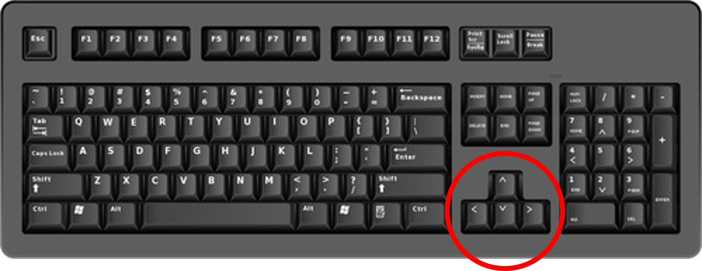

<!DOCTYPE html>
<html>

<head>
	<title>Mate choice experiment</title>
	<script src="../jspsych-6.1.0/jspsych.js"></script>
	<script src="../jspsych-6.1.0/plugins/jspsych-html-keyboard-response.js"></script>
	<script src="../jspsych-6.1.0/plugins/jspsych-html-slider-response.js"></script>
	<script src="../jspsych-6.1.0/plugins/jspsych-image-keyboard-response.js"></script>
	<script src="../jspsych-6.1.0/plugins/jspsych-image-button-response.js"></script>
	<script src="../jspsych-6.1.0/plugins/jspsych-html-button-response.js"></script>
	<script src="../jspsych-6.1.0/plugins/jspsych-external-html.js"></script>
	<script src="../jspsych-6.1.0/plugins/jspsych-fullscreen.js"></script>
	<script src="../jspsych-6.1.0/plugins/jspsych-survey-html-form.js"></script>
	<script src="../jspsych-6.1.0/plugins/jspsych-instructions.js"></script>
	<script src="../jspsych-6.1.0/plugins/jspsych-survey-multi-select.js"></script>
	<script src="../jspsych-6.1.0/plugins/jspsych-video-button-response.js"></script>
	<script src="../jspsych-6.1.0/plugins/jspsych-survey-text.js"></script>
	<script src="../jspsych-6.1.0/plugins/jspsych-image-slider-response.js"></script>
	<script src="https://code.jquery.com/jquery-3.3.1.slim.min.js"
		integrity="sha384-q8i/X+965DzO0rT7abK41JStQIAqVgRVzpbzo5smXKp4YfRvH+8abtTE1Pi6jizo"
		crossorigin="anonymous"></script>
	<script src="https://cdnjs.cloudflare.com/ajax/libs/popper.js/1.14.7/umd/popper.min.js"
		integrity="sha384-UO2eT0CpHqdSJQ6hJty5KVphtPhzWj9WO1clHTMGa3JDZwrnQq4sF86dIHNDz0W1"
		crossorigin="anonymous"></script>
	<script src="https://stackpath.bootstrapcdn.com/bootstrap/4.3.1/js/bootstrap.min.js"
		integrity="sha384-JjSmVgyd0p3pXB1rRibZUAYoIIy6OrQ6VrjIEaFf/nJGzIxFDsf4x0xIM+B07jRM"
		crossorigin="anonymous"></script>
	<script src="https://cdnjs.cloudflare.com/ajax/libs/axios/0.20.0/axios.js"
		integrity="sha512-nqIFZC8560+CqHgXKez61MI0f9XSTKLkm0zFVm/99Wt0jSTZ7yeeYwbzyl0SGn/s8Mulbdw+ScCG41hmO2+FKw=="
		crossorigin="anonymous"></script>
	<script src="../data/gender.js"></script>
	<script src="../data/singlesV2.js"></script>
	<link href="../jspsych-6.1.0/css/jspsych.css" rel="stylesheet" type="text/css">
	<link href="../styles/experiments.css" rel="stylesheet">
	<meta name="author" content="Ricardo Santiago Araújo">

	<script>
		/* Trying to set a delay but its not working correctly

		window.onload = function(){
			var theDelay = 10;
			var timer = setTimeout("showText()",theDelay*1000)
		}
		function showText(){
			document.getElementById("delayedText").style.visibility = "visible";
		}
		*/
	</script>


	<style>
		.leftallign {
			text-align: justify
		}

		.bgImgCenter {
 			 border: 1px solid #000;
  			position: relative;
		}

		.whiterec {
			height: 3%;
  			width: 100%;
 			background-color: rgb(255, 255, 255);
			outline: none;
			position: absolute;
			bottom: 0;
			z-index: 3
		}

		.Loading {
			height: 101%;
  			width: 101%;
			text-align: center;
 			background-color: white;
			outline: none;
			position: absolute;
			bottom: -0.5%;
			left: -0.5%;
			z-index: 4;
			-webkit-animation: seconds 1.0s forwards;
			-webkit-animation-iteration-count: 1;
			-webkit-animation-delay: 5s;
			animation: seconds 1s forwards;
			animation-iteration-count: 1;
			animation-delay: 1s;
		}
		@-webkit-keyframes seconds {
		0% {
			opacity: 1;
		}
		100% {
			opacity: 0;
			top: -9999px;
		}
		}
		@keyframes seconds {
		0% {
			opacity: 1;
		}
		100% {
			opacity: 0;
			top: -9999px;
		}
		}

		.partner1R {outline: none; width: 27.5%; position: absolute; bottom: 2%; left: 15%; z-index: 1}
		.partner1L {outline: none; width: 27.5%; position: absolute; bottom: 2%; right: 15%; z-index: 1}


		.picsingle {
			width: 30%;
			position: relative;
			bottom: 0;
			left: 0;
			z-index: 2
		}

		.Focus {
			line-height: 200%
		}
	</style>

</head>

<body></body>
<script>

	//create timeline
	var timeline = [];

	// generate a random subject ID with 15 characters
	var subject_id = jsPsych.randomization.randomID(15);

	// record the subject ID in the jsPsych data
	// this adds a property called 'subject'  to every trial
	jsPsych.data.addProperties({
		subject: subject_id,
	});

	///////////////////////////////////////////////////////////////////////////////////////////////

	/* CONSENT */

	// Function to check if a subject has given consent to participate.
	var check_consent = function (elem) {
		if (document.getElementById('consent_checkbox').checked) {
			return true;
		}
		else {
			alert("If you wish to participate, you must check the box next to the statement 'I agree to take part in this study.'");
			return false;
		}
		return false;
	};

	//Consent form
	var Consent = {
		type: 'external-html',
		url: "consent.html", //load the external file
		cont_btn: "start",
		check_fn: check_consent
	};
	//timeline.push(Consent);


	///////////////////////////////////////////////////////////////////////////////////////////////

	/* QUESTIONNAIRE */

	var personalData = {};

	var checkQuestionnaire = function (elem) {
		const form = Array.from(document.getElementsByClassName('required'));
		const formOptional = Array.from(document.getElementsByClassName('optional'));
		const atractiveRadio = Array.from(document.getElementsByClassName('likert-atractive'));
		const iqRadio = Array.from(document.getElementsByClassName('likert-iq'));
		let valid = true;

		form.forEach(element => {
			if (element.value) {
				personalData[element.id] = element.value;
			} else {
				valid = false;
			}
		});

		formOptional.forEach(element => {
			if (element.value) {
				personalData[element.id] = element.value;
			}
		});

		personalData.iq = iqRadio.find(element => element.checked).value;
		personalData.atractive = atractiveRadio.find(element => element.checked).value;

		if (!valid) {
			alert("Please fill every field!")
		}

		return valid;
	};

	function loadQuestionnaire(event) {
		const value = event.target.value;
		const id = event.target.id;

		const element = document.getElementById(`${id}-other`);
		element.classList.remove("invisible");
		element.classList.remove("visible");

		if (value === "Other") {
			element.classList.add("visible");
		} else {
			element.classList.add("invisible");
		}
	}

	//Questionnaire
	var Questionnaire = {
		type: 'external-html',
		url: "questionnaire.html", //load the external file
		cont_btn: "questionnaireCompleted",
		check_fn: checkQuestionnaire,
		execute_script: true
	};

	//timeline.push(Questionnaire);

	///////////////////////////////////////////////////////////////////////////////////////////////

	//Turn on fullscreen mode
	timeline.push({
		type: "fullscreen",
		fullscreen_mode: true
	});

	//Focus
	var Focus = {
		type: 'html-button-response',
		stimulus: '<h1 class="Focus"> Please ensure that you are sitting comfortably in a quiet environment, and will not be disturbed while doing the experiment.<br> We would like to have your full attention. </h1>',
		choices: ['Click here for the instructions'],
	}
	//timeline.push(Focus)

	//Instructions1
	var Instructions1 = {
		type: 'html-button-response',
		stimulus: `<h3> Instructions </h3> <p class="leftallign">  In this section of the study, you will be shown pairs of ${oppositeGender} portraits in a fictional dating website. We would like you to behave as you would if you were using a real online dating service with real users and make choices accordingly. <br> You will be prompted to vote on <strong>which individual you would prefer to go on a date with</strong>. You will also be able to see votes from the other users of the service. Votes are represented by the icon below: </p> </img> <p class="leftallign"> Additionally, we will also show  you separate portraits and ask  you simple questions about them (for example "what is their eye color?"). </p> <br><br>`,
		choices: ['Click here to watch a demonstration video'],
	}
	//timeline.push(Instructions1)

	// Demo videos
	var demo1 = {
		type: 'video-button-response',
		sources: [`../vid/Demonstrative example - Part 1and2${genderKey}.mp4`],
		choices: ['Next'],
		button_html: '<button class="jspsych-btn">%choice%!</button>',
		margin_vertical: '10px',
		margin_horizontal: '8px',
		prompt: `You will be shown two ${oppositeGender} portraits in our dating platform, side by side. Votes from the users are loaded above the pictures.`,
		width: 850,
		autoplay: true,
		rate: 1.5,

		response_ends_trial: true
	}
	//timeline.push(demo1);

	var demo2 = {
		type: 'video-button-response',
		sources: [`../vid/Demonstrative example - Part 3${genderKey}.mp4`],
		choices: ['Next'],
		button_html: '<button class="jspsych-btn">%choice%!</button>',
		margin_vertical: '10px',
		margin_horizontal: '8px',
		prompt: `To pick your preferred picture, use the <strong>left and right arrow keys</strong> on your keyboard. You only have <strong>15 seconds</strong> to vote and a countdown clock will be displayed on the screen.`,
		width: 850,
		autoplay: true,
		rate: 1.5,

		response_ends_trial: true
	}
	//timeline.push(demo2);

	//Instructions2
	var Instructions2 = {
		type: 'html-button-response',
		stimulus: '<h4> Demonstration finished </h4> <p class="leftallign"> This version of the experiment is a work-in-progress used for pilot studies. The trials that follows may not look exactly like what you have just been shown, but is rather a simplified version. To pick between pictures, <strong>use the arrow keys on your keyboard</strong> as shown below:  </p> </img><br></img> <br><br>',
		choices: ['Click here to begin experiment!'],
	}
	//timeline.push(Instructions2)


	////////////////////////////////////////////////////////////////////////////////////////////////

	/* MATE CHOICE TRIALS */

	//Eye colour pick
	var Eyecolour1 = {
		type: 'image-button-response',
		stimulus: `../img/bonus/${eyeColour}.jpg`,
		prompt: "What is this individual's eye colour?",
		stimulus_height: 400,
		data: {
			trial: 'eye-colour-question',
			imgId: `${eyeColour}`
		},
		choices: ['Brown', 'Blue']
	}
	//timeline.push(Eyecolour1)

	//Age pick
	var Age1 = {
		type: 'image-slider-response',
		stimulus: `../img/bonus/${age}.jpg`,
		labels: ['10', '|', '20', '|', '30', '|', '40', '|', '50', '|', '60'],
		min: 0,
		max: 60,
		start: 30,
		data: {
			trial: 'age-estimate',
			imgId: `${age}`
		},
		require_movement: true,
		stimulus_height: 400,
		prompt: "Estimate his age using the slider above. <br>",
	};
	//timeline.push(Age1)

	// Mate choice trials
	var mate_choice_trial = {
		timeline: [
			{
				type: 'html-slider-response',
				stimulus: jsPsych.timelineVariable('pair'),
				prompt: "<p class='prompt'> On a scale of 1 to 10, how attractive would you rate the individual above? <strong>Drag the slider to respond. </strong>  <br> <video src='../vid/countdown15s.mp4' height = 40  class='countdown' autoplay = true> </p> ",
				labels: ['0', '1', '2', '3', '4', '5', '6', '7', '8', '9', '10'],
				min: 0,
				max: 10,
				start: 5,
				slider_width: 400,
				data: {
					pairId: jsPsych.timelineVariable('id'),
					leftRate: jsPsych.timelineVariable('left'),
					rightRate: jsPsych.timelineVariable('right'),
					trial: 'mate-choice'
				},
				trial_duration: 15000,
			}
		],
		timeline_variables: singlesV2,
		randomize_order: true,

		sample: {
			type: 'without-replacement',
			size: 15, // 15 trials, without replacement
		},
	}
	timeline.push(mate_choice_trial);

	//Eye colour pick
	var Eyecolour2 = {
		type: 'html-button-response',
		stimulus: `The goal of this task is to test your attention. Here, select <strong>"Brown"</strong> regardless of the actual colour. </img> <br>`,
		prompt: "What is this individual's eye colour, <strong> based on the text above the picture</strong>?",
		data: {
			trial: 'eye-colour-attention-check',
			imgId: `${attentionCheck}`
		},
		choices: ['Brown', 'Blue'],
	}
	//timeline.push(Eyecolour2)

	//Age pick
	var Age2 = {
		type: 'image-slider-response',
		stimulus: `../img/bonus/${secondAge}.jpg`,
		labels: ['10', '|', '20', '|', '30', '|', '40', '|', '50', '|', '60'],
		min: 0,
		max: 60,
		start: 30,
		data: {
			trial: 'age-estimate',
			imgId: `${secondAge}`
		},
		require_movement: true,
		stimulus_height: 400,
		prompt: "Estimate his age using the slider above. <br>"
	};
	//timeline.push(Age2)

	//End of trials message
	var TestEnd = {
		type: 'html-button-response',
		stimulus: '<h4> This is the end of this task. </h4> ',
		choices: ['Continue to next section'],
	}
	//timeline.push(TestEnd)

	///////////////////////////////////////////////////////////////////////////////////////////////

	/* DEBRIEFING */

	var Perception = {
		type: 'survey-multi-select',
		questions: [
			{
				prompt: "In general, what as your impression about the votes of other participants that you saw? <br> Please check the options that fit.",
				options: ["Generally agree", "Did not agree or disagree", "Generally disagree", "I took them into consideration for my choices", "I did not pay attention to them"],
				horizontal: false,
				required: true,
				name: 'perception'
			}
		],
		data: {
			trial: 'perception'
		},
	};
	//timeline.push(Perception);

	//Explanation
	var Debriefing = {
		type: 'html-button-response',
		stimulus: `<h4> This is the end of this experiment. </h4> <br> <p class='leftallign' >The goal of this study was to determine the effect of social information on human mate choice. In this experiment, you were shown pairs of ${oppositeGender} faces of similar attractiveness and asked to pick the most attractive one. At the same time, you were provided social information in the form of a vote tally from fictional voters. By comparing your votes with those of other participants without such information, we can calculate the effect of social information in mate choice. <br> Your participation is greatly appreciated! If you have any questions about this study or would like to be updated about the study's results, please contact us. The name and email address of the main researcher in this project is listed below: </p> Ricardo Santiago Araújo - <a class=mail href="mailto:ricardo.santiago-araujo@univ-tlse3.fr">ricardo.santiago-araujo@univ-tlse3.fr</a> <p class='leftallign'> Finally, we urge you not to discuss this study with anyone else who is currently participating or might participate in the future. As you can certainly appreciate, prior knowledge of the nature of this study would influence the behavior of participants and thus negatively affect the validity of the data.</p>`,
		choices: ['Click here to finish']
	}
	//timeline.push(Debriefing);

	//Feedback
	var Feedback = {
		type: 'survey-text',
		questions: [
			{ prompt: "<strong> Conclusion of experiment pilot. </strong> <br><br> <div class='leftallign'>Please write here any Suggestions/Observations about the experiment that you would like to share with us, as well as any bugs you have experienced. Your feedback is greatly appreciated! </div>", rows: 15, columns: 70 },
			{ prompt: "<div class='leftallign'> Were you already aware of the purpose of this experiment before you took part?</div>", rows: 3, columns: 70 }
		],
		data: {
			trial: 'feedback'
		},
	};
	//timeline.push(Feedback);

	//Exit fullscreen
	timeline.push({
		type: "fullscreen",
		fullscreen_mode: false,
		message: "Thank you for your feedback. <strong>Press any key</strong> to submit your data. You may then close this page."
	});

	//The End
	timeline.push({
  type: 'html-keyboard-response',
  stimulus: 'Thank you for your feedback. <strong>Press any key</strong> to submit your data. You may then close this page.'
});

	/* start the experiment */
	jsPsych.init({
		timeline: timeline,
		on_finish: function () {
			handleData();
		}
	});

	function handleData() {
		const questionnaireData = JSON.parse(jsPsych.data.get().json());
		const data = { data: questionnaireData, personalData, userGender: gender };

		axios.post("https://mate-choice-test.herokuapp.com/questionnaires/add", data);
	}
</script>

</html>